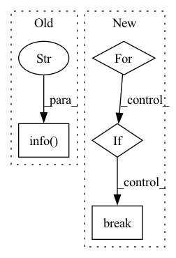

Pattern ID :21979
Before Change
result = min(results, key=lambda x: x["js_place_length"])
logger.info(f"length_true={result["js_place_length"]:.2f}")
logger.info(f"planning_time={time.time() - t_start:.2f} [s]" )
execute_plan(env, result)
After Change
)
auc_pred = auc_pred.cpu().numpy()
for threshold in [0.6, 0.4, 0.2, 0]:
keep = success_pred > threshold
if keep.sum() > 0:
break
success_pred = success_pred[keep]
length_pred = length_pred[keep]
auc_pred = auc_pred[keep]In pattern: SUPERPATTERN
Frequency: 4
Non-data size: 4
Instances Fragment ID: 69824888
Project Name: wkentaro/reorientbot
Commit Name: ff8d814b270cd083c0295ae7f30192ca46d865f5
Time: 2021-05-28
Author: www.kentaro.wada@gmail.com
File Name: examples/reorient/learned.py
M Class Name: AnonimousClass
N Class Name: AnonimousClass
M Method Name: plan_and_execute_reorient(5)
N Method Name: plan_and_execute_reorient(5)
M Parent Class:
N Parent Class:
M File Name: examples/reorient/learned.py
N File Name: examples/reorient/learned.py
M Start Line: 30
M End Line: 142
N Start Line: 76
N End Line: 144
Before Change
result = min(results, key=lambda x: x["js_place_length"])
logger.info(f"length_true={result["js_place_length"]:.2f}")
logger.info(f"planning_time={time.time() - t_start:.2f} [s]" )
execute_plan(env, result)
After Change
)
auc_pred = auc_pred.cpu().numpy()
for threshold in [0.6, 0.4, 0.2, 0]:
keep = success_pred > threshold
if keep.sum() > 0:
break
success_pred = success_pred[keep]
length_pred = length_pred[keep]
auc_pred = auc_pred[keep] Fragment ID: 69824892
Project Name: wkentaro/safepicking
Commit Name: ff8d814b270cd083c0295ae7f30192ca46d865f5
Time: 2021-05-28
Author: www.kentaro.wada@gmail.com
File Name: examples/reorient/learned.py
M Class Name: AnonimousClass
N Class Name: AnonimousClass
M Method Name: plan_and_execute_reorient(5)
N Method Name: plan_and_execute_reorient(5)
M Parent Class:
N Parent Class:
M File Name: examples/reorient/learned.py
N File Name: examples/reorient/learned.py
M Start Line: 30
M End Line: 142
N Start Line: 76
N End Line: 144
Before Change
)
t_start = time.time()
transition = env.step(act_result)
logger.info(f"Step time: {time.time() - t_start:.2f} [s]" )
logger.info(
f"action={act_result.action}, reward={transition.reward}, "
f"terminal={transition.terminal}",
)After Change
for key in obs:
obs[key] = obs[key][None, None, :]
if agent is None:
for action in np.random.permutation(len(env.actions)):
act_result = ActResult(action)
if env.validate_action(act_result):
break
else:
act_result = agent.act(
step=-1, observation=obs, deterministic=False, env=env
) Fragment ID: 69824887
Project Name: wkentaro/reorientbot
Commit Name: 3b99b48dd0142eed6fcc0fd87e0e1dc9f95daf39
Time: 2021-06-11
Author: www.kentaro.wada@gmail.com
File Name: examples/target_pick/check_exploration.py
M Class Name: AnonimousClass
N Class Name: AnonimousClass
M Method Name: main(0)
N Method Name: main(0)
M Parent Class:
N Parent Class:
M File Name: examples/target_pick/check_exploration.py
N File Name: examples/target_pick/check_exploration.py
M Start Line: 34
M End Line: 45
N Start Line: 26
N End Line: 64